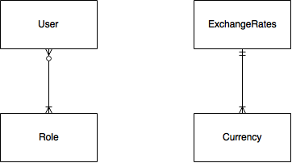
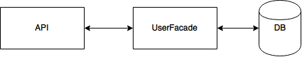

When we first started this CA we felt we didnt have the nessary time to complete this task.
But when we started working on the CA it became more manageable.
This time the rest assured test was alot eaiser then the alst time.
But all in all we have great fun and learnt alot about Angular, Javascript and Rest.
Company Info:
When you are logged in, there should be a tab in the navigation bar which should say Company info.
To test this site, simply go to it, fill out the form. In the option bar, you have to pick anything else that "normal" or "Product Units", since the infomation
doesn't show up under those tabs. But simply enter a company name or vat number, and the information about that company and its product units will show up.
You can then click on the departments to get more information about them.
Exchange Rate Info:
When you are logged in, there should be a tab in the navigation bar which should say Exhange Rate Info.
The Server should automaticly make a api call every 24hour to the danish nationalbank to get exchange rate info on difference currency.
Since the nationalbank first updates there api after 2pm, we have created our backend such that we show the info from the day before, since
we are using the date as a primary key in the database. This also mean that since the nationalbank doesn't update there api in the weekend,
we have no data to access on sundays and mondays (since we use the data from the day before). To test this, you can either use the page "Echange Rate Info" or
make a simple api call in postman can be made like this: "server/projectname/api/currency/dailyrates".
The calulator can be tested in the same way, either use the site or with the api: server/projectname/api/currency/calculator/:amount/:fromCurrencyCode/ToCurrencyCode
We followed the assignment step by step
we chose to make the entities and thier relations from java.

Here you can see how our relations.

Here you can see our facades
For this assignment we only made one facade UserFacade, which handels all with user and currency. The right way would have been to make 2 facades, one for user and one for currency.
As showen above, our APIs call the facade to get/store/delete data in our database.
We have made two rest api's around creating and deleting a user, and for getting info about currency rates.
Most of our api calls connects to our facade, which will look in our database for information that needs to
be returned. One of our api calls, calls a java class, which will calculate the specifik rate, when you try
to use our currency calculator. We also have a api to create our database on our remote server. This is only used as
a "hack" to get information in our database with hashed passwords. In reality this api call should be remove from the project
right after we have created our databse on the remote server, but since this is a school project we have kept it,
to show how we got our database.
We havent made error handling ourself. The project we were given allerady had some error handling.
We have tested our API by using Rest Assured.
We have testet both our Admin and Currency API.
The reason is to make sure they work propplery before deployment.
This API have 2 methodes GET and DELETE.
This API requries that an admin is logged in.
We have only tested on the GET where we are suppose to get all the users.
As we can see above this worked.
We have choosen not to test the DELETE, because we are using our live database to test by.
We know that normally you would never test aginst your live database.
But use a derby or a self made one to test by.
This API has two GET methodes.
This test requires that a user is logged in and that its not sunday or monday.
Here we have tested our GET methodes in currency api.
Good
Bad
Here you can see a more specific who made what. But in general we helped each other.
Made the Admin part frontend and backend, unit testing.
Made Create user, Entitys, APIs (Exchanges Rates and Company Info) and Ducomentation.
Made frontend for Comapny Info and Echanges Rates, Rest Assured test.